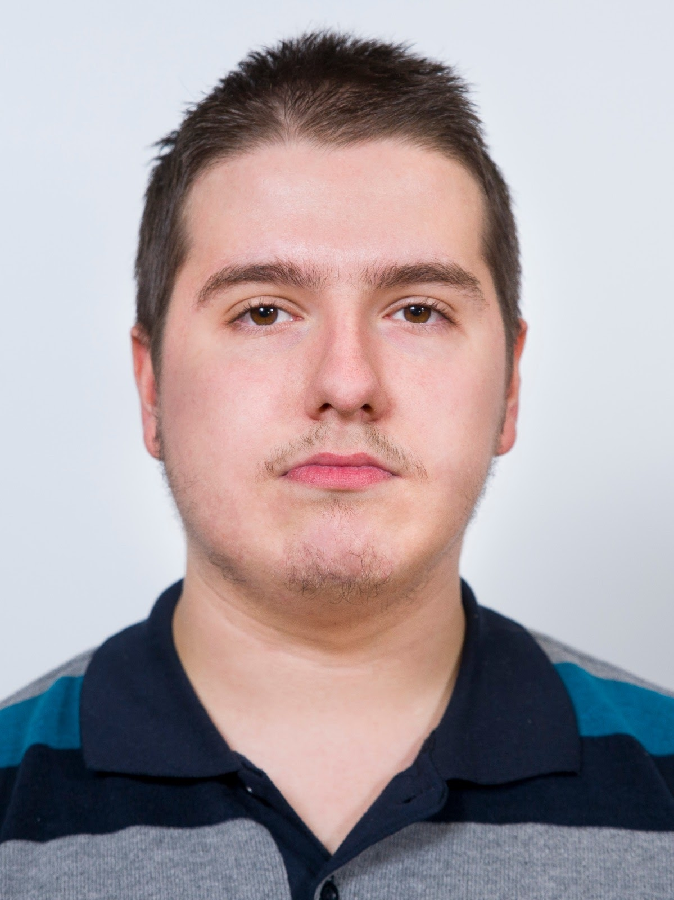

| INFORMAȚII PERSONALE |
|  |
- Strada Mărăști, nr.5, Sibiu, 550337, România
- Fix: 0269.442.723 Mobil: 0748.043.013
- E-mail: ovidiurafa@yahoo.com
- Sex: Masculin Data nașterii: 13 Octombrie 2000 Naționalitate: Română
|
| EDUCAȚIE ȘI FORMARE |
| |
- 2020 - prezent: Student la Facultatea de Inginerie "Hermann Oberth" Sibiu (Studii universitare)
- 2016 - 2020: Elev la Colegiul Național "Gheorghe Lazăr" Sibiu (Studii liceale)
- 2012 - 2016: Elev la Colegiul Național "Gheorghe Lazăr" Sibiu (Studii gimnaziale)
- 2008 - 2012: Elev la Școala Gimnazială "Regina Maria" Sibiu (Studii primare)
|
| EDUCAȚIE ȘI FORMARE |
| |
- Iulie 2016 - Mai 2018: Centrul pentru formare în Limba Germană - Curs intensiv Nivel B1-B2
- Septembrie 2013 - Iunie 2014: Bells Academy - Curs intensiv Limba Engleză
|
| ABILITĂȚI ȘI COMPETENȚE PERSONALE |
| |
- Aptitudini și competențe artistice: muzică, desen, literatură, informatică
- Aptitudini și competențe sociale: comunicativ, spirit de muncă în echipă, voluntar în acțiuni organizate in anumite scopuri (domenii sportive, culturale, sanitare etc.).
Aitudine dinamică, spirit de echipă,
gândire pozitivă, inițiativă, entuziasm, cooperant,
abilitatea de a învăța și aplica repede cunoștințele acumulate
|
| LIMBA MATERNĂ ȘI ALTE LIMBI |
Limba maternă: Română
Limbi străine:
|
| Limba |
Înțelegere |
Vorbire |
Scriere |
| Ascultare |
Citire |
Participare la conversație |
Discurs oral |
| Engleză |
C1 |
C1 |
B2 |
B2 |
C1 |
| Germană |
B1 |
B2 |
B1 |
B1 |
B2 |
|
| ABILITĂȚI ȘI COMPETENȚE ORGANIZAȚIONALE |
| |
- Rigoare în acțiunile organizatorice
|
| ABILITĂȚI ȘI COMPETENȚE TEHNICE |
| |
- Operare PC - Sisteme de Operare: Windows 7, Windows 10; Microsoft Office 2019; Internet; limbaj de programare C++
|
| CUM TE-AI DESCRIE? |
| |
- Sociabil, perseverent, de încredere
|
| CUM TE VEZI PESTE 5 ANI? |
| |
|
| Data întocmirii: 29 mai 2022 |
Semnătura titularului:
RAFA OVIDIU-IOAN-LAURENȚIU |